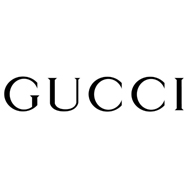
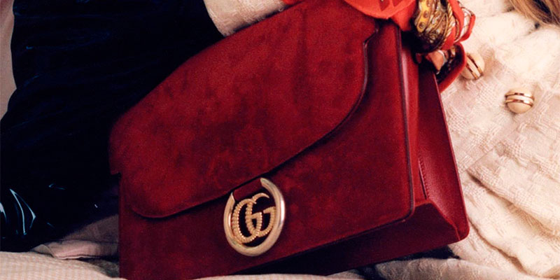

gucci

Guccio Gucci teve a ideia de começar um negócio muitos anos antes, quando ainda trabalhava como ascensorista no Hotel Savoy, em Londres. Lá, ele ficou impressionado com o luxo e a elegância ostentados pelos turistas ricos que ele via diariamente
A Gucci nasceu em 1902 na Florença, pelas mãos de Guccio Gucci, filho de artesão e de origem humilde, que, enquanto trabalhava como Maitre, no famoso e requintado hotel Savoy de Londres notou os símbolos impressos nas malas e brasões de família e a partir disso, começou a fabricar as suas próprias malas e bolsas.
Sua intenção inicial era vender acessórios de viagens, feitos com materiais de alta qualidade, pelos melhores artesãos da cidade, incluindo até pessoas da sua própria família. Em pouco tempo, os trabalhos de Guccio Gucci conquistaram a alta burguesia florentina, tornando-se uma das mais conhecidas pela elite do país.
Em 1938, a primeira grande loja da Gucci foi aberta na cidade de Roma, dando o start para a expansão dos negócios que aos poucos se tornaram parte da família Gucci, com os filhos Ugo, Aldo e Vasco se unindo ao pai.
